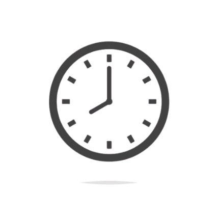

Math in Time

Apart from the formula of time (shown below),
there are many other uses of mathematics for time management & scheduling.
Behind the World's Computers
Hiding in computer programs, there exists code that:
- estimates times to optimize schedules
- prioritises tasks while improving efficiency with mathematical analysis
- combines all activity times and finds available time slots using set theory and intersection
calculations
- converts meeting times for different time zones by applying offsets
How Can We (Humans) Do That?
Although these tasks seem complex, you may already be completing these tasks everday:
- To estimate time, we often use online calendars. However, we can also write our activity times on paper.
- To prioritise tasks, we weigh their importance (list from least to greatest) while analyzing our
productivity.
- Adding on to our first point that combines times, we can look for gaps of time in our day.
- Finally, we can convert to time zones by adding or subtracting hours / minutes from our times.